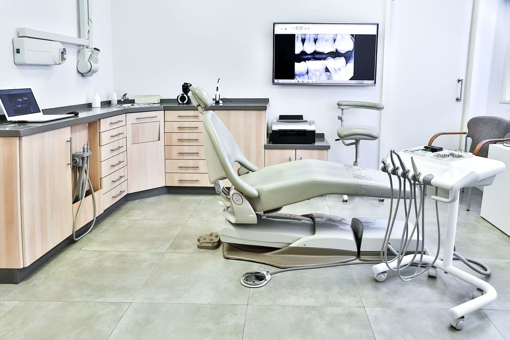

About us
100SMILES Dental Care is a dental service organization catering to all age groups, with patients ranging from young children to retirees. It provides both acute and emergency dental care, as well as focuses on establishing long-term doctor-patient relationships and providing preventive care. The clinic is a modern dental facility located at 33 Fanweiniao Street, La Salle City. With over 30 years of roots in the community and more than 50 years of dental service experience, it is committed to providing patients with the highest quality, friendly, reliable, and empathetic dental care services. The clinic promises to provide the highest standard of care regardless of the patient's age or dental needs. The professional dental team and support staff have a deep sense of responsibility for dental health, ensuring that every patient receives the attention and treatment they deserve.
Dr. Johanna Gray (Doctor of Dentistry, Orthodontics):
Johanna started her dental career after graduating from a prestigious university. She focuses on excellent services in the field of orthodontics and has accumulated rich experience, injecting valuable strength into the 100SMILES dental clinic team. Her top-notch orthodontic care level demonstrated in daily diagnosis and treatment is evident to all.
Dr. Benedict Sloan (Doctor of Dentistry):

Our experienced dentist (nickname) has been dedicated to the field of dental health for many years, caring for the overall health and well-being of patients. At 100SMILES Dental Clinic, Dr. Sloan's steadfast commitment to providing high-quality care is the core pillar of our diagnostic and therapeutic services.
Richard Attam (Bachelor of Dentistry):

Richard is a senior dental hygienist at 100SMILES Dental Clinic. He has a profound understanding of oral care and an empathetic attitude, playing a key role in assisting dentists in their work and ensuring the dental health of patients during their visits.
April Kepner - Front Desk receptionist:

April Kepner is a friendly front desk receptionist at 100SMILES Dental Clinic. She has a warm smile and loves customer service work. She will assist you in handling appointments and consultations, ensuring a smooth and comfortable medical experience at the clinic.